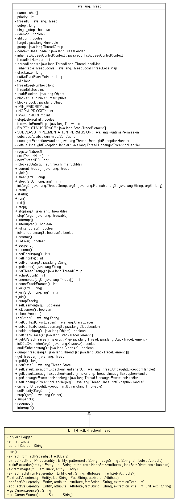

tud.iir.extraction.fact
Class EntityFactExtractionThread

java.lang.Object
 java.lang.Thread
tud.iir.extraction.fact.EntityFactExtractionThread
java.lang.Thread
tud.iir.extraction.fact.EntityFactExtractionThread
- All Implemented Interfaces:
- java.lang.Runnable
public class EntityFactExtractionThread
- extends java.lang.Thread
The EntityFactExtractionThread extracts facts for one given entity.
Therefore, extracting facts can be parallelized on the entity level.
| Nested classes/interfaces inherited from class java.lang.Thread |
java.lang.Thread.State, java.lang.Thread.UncaughtExceptionHandler |
| Fields inherited from class java.lang.Thread |
MAX_PRIORITY, MIN_PRIORITY, NORM_PRIORITY |
|
Method Summary |
private void |
addFactValue(Entity entity,
Attribute attribute,
java.lang.String factString,
int extractionType)
|
private void |
addFactValue(Entity entity,
Attribute attribute,
java.lang.String factString,
int extractionType,
java.lang.String unitText)
|
private void |
extractFactFromPhrase(Entity entity,
java.lang.String[] patternSet,
java.lang.String pageString,
Attribute attribute)
Extract fact values that are related to the given pattern. |
private void |
extractFactsFromPage(Entity entity,
java.lang.String url,
java.util.HashSet<Attribute> attributes)
Extract given attribute(s) from page, look in free text and in structures. |
private void |
extractFromFactPages(FactQuery fq)
Get the contents of the pages where the fact query matches. |
private void |
extractImages(FactQuery fq,
Entity entity)
|
protected void |
extractValue(Entity entity,
FactString factString,
Attribute attribute)
Try to find the fact value in the given search string and add fact value to the entity. |
java.lang.String |
getCurrentSource()
|
private void |
plainExtraction(Entity entity,
java.lang.String url,
java.util.HashSet<Attribute> attributes,
boolean lookBothDirections)
The plain extraction treats the website as a long string without tags
every mention of the attribute will be found and the surrounding text is searched for the attributes regular expression. |
void |
run()
|
void |
setCurrentSource(java.lang.String currentSource)
|
| Methods inherited from class java.lang.Thread |
activeCount, checkAccess, countStackFrames, currentThread, destroy, dumpStack, enumerate, getAllStackTraces, getContextClassLoader, getDefaultUncaughtExceptionHandler, getId, getName, getPriority, getStackTrace, getState, getThreadGroup, getUncaughtExceptionHandler, holdsLock, interrupt, interrupted, isAlive, isDaemon, isInterrupted, join, join, join, resume, setContextClassLoader, setDaemon, setDefaultUncaughtExceptionHandler, setName, setPriority, setUncaughtExceptionHandler, sleep, sleep, start, stop, stop, suspend, toString, yield |
| Methods inherited from class java.lang.Object |
clone, equals, finalize, getClass, hashCode, notify, notifyAll, wait, wait, wait |
logger
private static final org.apache.log4j.Logger logger
entity
private Entity entity
currentSource
private java.lang.String currentSource
EntityFactExtractionThread
public EntityFactExtractionThread(java.lang.ThreadGroup threadGroup,
java.lang.String name,
Entity entity)
run
public void run()
- Specified by:
run in interface java.lang.Runnable- Overrides:
run in class java.lang.Thread
extractFromFactPages
private void extractFromFactPages(FactQuery fq)
- Get the contents of the pages where the fact query matches.
Pass entity to specialized extraction algorithms that add facts/fact values to the entity.
- Parameters:
fq - The fact query.
extractFactFromPhrase
private void extractFactFromPhrase(Entity entity,
java.lang.String[] patternSet,
java.lang.String pageString,
Attribute attribute)
- Extract fact values that are related to the given pattern.
The pattern is supposed to be found in free text, e.g. "the population of Germany is".
- Parameters:
entity - The entity.patternSet - A set of patterns.pageString - The content of the page.attribute - The attribute.
plainExtraction
private void plainExtraction(Entity entity,
java.lang.String url,
java.util.HashSet<Attribute> attributes,
boolean lookBothDirections)
- The plain extraction treats the website as a long string without tags
every mention of the attribute will be found and the surrounding text is searched for the attributes regular expression.
- Parameters:
entity - The entity.url - The url.attributes - A set of attributes.lookBothDirections - If true, values are searched in both directions.
extractImages
private void extractImages(FactQuery fq,
Entity entity)
extractFactsFromPage
private void extractFactsFromPage(Entity entity,
java.lang.String url,
java.util.HashSet<Attribute> attributes)
- Extract given attribute(s) from page, look in free text and in structures.
- Parameters:
entity - The entity.url - The URL.attributes - A set of attributes.
extractValue
protected void extractValue(Entity entity,
FactString factString,
Attribute attribute)
- Try to find the fact value in the given search string and add fact value to the entity.
- Parameters:
entity - The entity for which the facts will be extracted.searchString - The string where the fact value is expected.attribute - The attribute that is being searched.
addFactValue
private void addFactValue(Entity entity,
Attribute attribute,
java.lang.String factString,
int extractionType)
addFactValue
private void addFactValue(Entity entity,
Attribute attribute,
java.lang.String factString,
int extractionType,
java.lang.String unitText)
getCurrentSource
public java.lang.String getCurrentSource()
setCurrentSource
public void setCurrentSource(java.lang.String currentSource)